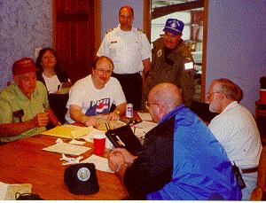
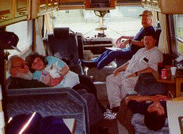

Here are some photos from a SAREX (Search Exercise) in Spokane, May 2000.
The "Operations Shack", thanks to Custom Aviation.

Roy's Radio Room (portable), with hard-working volunteers.

Transit to Spokane Sarex, with Long Nguyen holding down the right seat.
Picking up the PELT (Practice ELT) on an unnamed mountain airstrip east of
Felts Field. We don't ask all our SAR pilots to do this. Tom Jensen and Tom
Nesko with Nancy's C180. (She looked long at the picture but didn't ask....

Use your "back" button or:
Back to WASAR home page.